Tap anywhere to close
For your look · 15 Nov 26 · nothing is built yet
Every warning reworded so it reads on its own: a short label, the items with their times, and "assumed" wherever the app fills a time in. Your double-turn line is untouched.
Tap any picture to see it full size. The words are also written out under each pair, so you need not zoom.
The first is answered. The other three each have my recommendation. Tap one to jump to its pictures. Answer "as recommended" or by number.
VL BFM takes off 12:00 with no landing typed · BRIEFING 12:40–13:00 · RU takes off 13:00. "After" is the list once the new words and the assumed one-hour landing are both built.
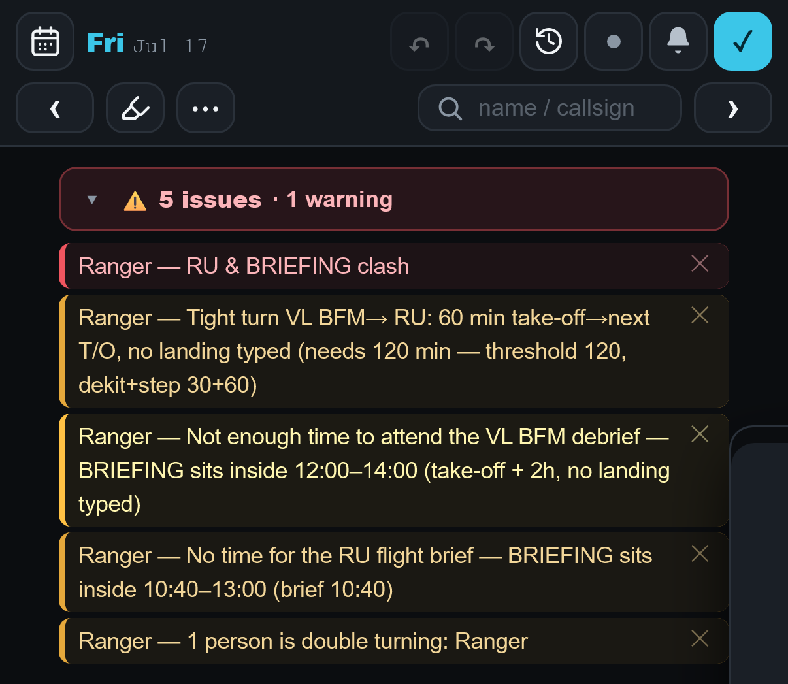
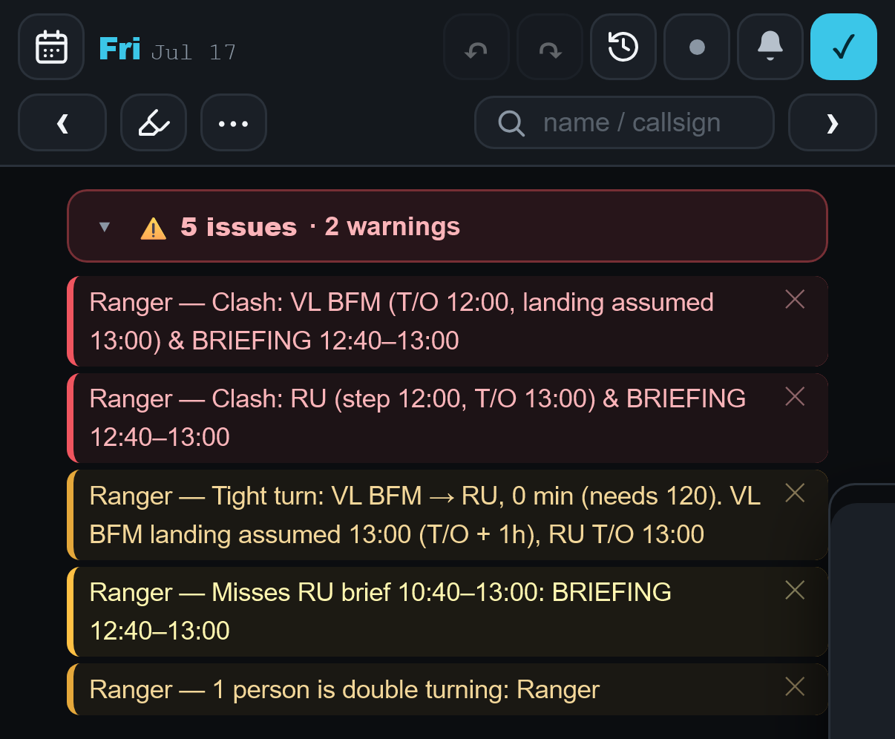
| Today | After |
|---|---|
| Not raised today: a blank landing counts as the take-off. | Ranger — Clash: VL BFM (T/O 12:00, landing assumed 13:00) & BRIEFING 12:40–13:00 |
| Ranger — RU & BRIEFING clash | Ranger — Clash: RU (step 12:00, T/O 13:00) & BRIEFING 12:40–13:00 |
| Ranger — Tight turn VL BFM→ RU: 60 min take-off→next T/O, no landing typed (needs 120 min — threshold 120, dekit+step 30+60) | Ranger — Tight turn: VL BFM → RU, 0 min (needs 120). VL BFM landing assumed 13:00 (T/O + 1h), RU T/O 13:00 |
| Ranger — Not enough time to attend the VL BFM debrief — BRIEFING sits inside 12:00–14:00 (take-off + 2h, no landing typed) | Goes away. With the landing assumed at 13:00 the debrief is 13:00–15:00, and the BRIEFING ends at 13:00. |
| Ranger — No time for the RU flight brief — BRIEFING sits inside 10:40–13:00 (brief 10:40) | Ranger — Misses RU brief 10:40–13:00: BRIEFING 12:40–13:00 |
| Ranger — 1 person is double turning: Ranger | Ranger — 1 person is double turning: Ranger (unchanged) |
I checked the rows by typing a 13:00 landing on VL BFM in the real app: it raised exactly these five, in this order, with today's words.
Where these differ from the five lines you liked:
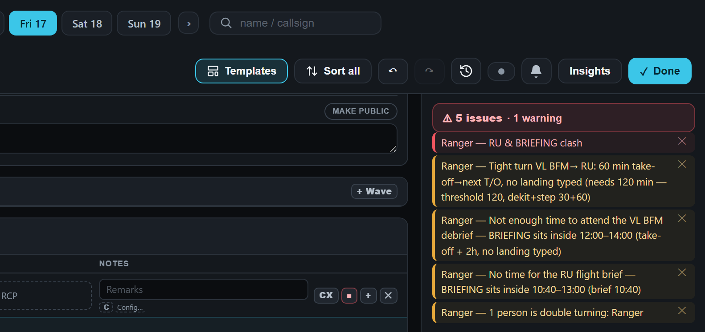
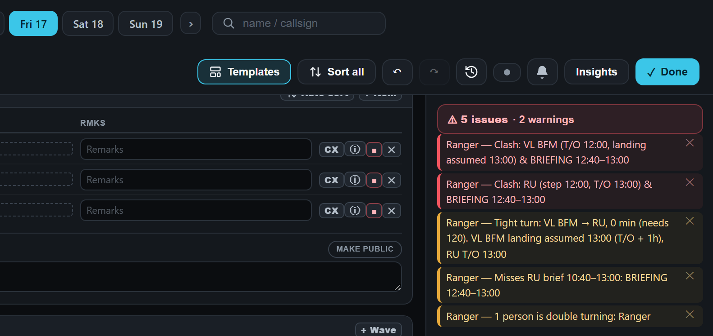
Every clash starts "Clash:" and gives both items with their times. A flight shows the end that causes the clash: its step (first row), its dekit (seventh row), or its T/O and landing. Today most lines give no times at all.
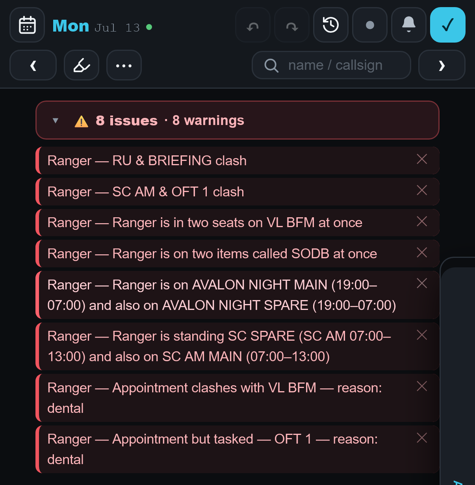
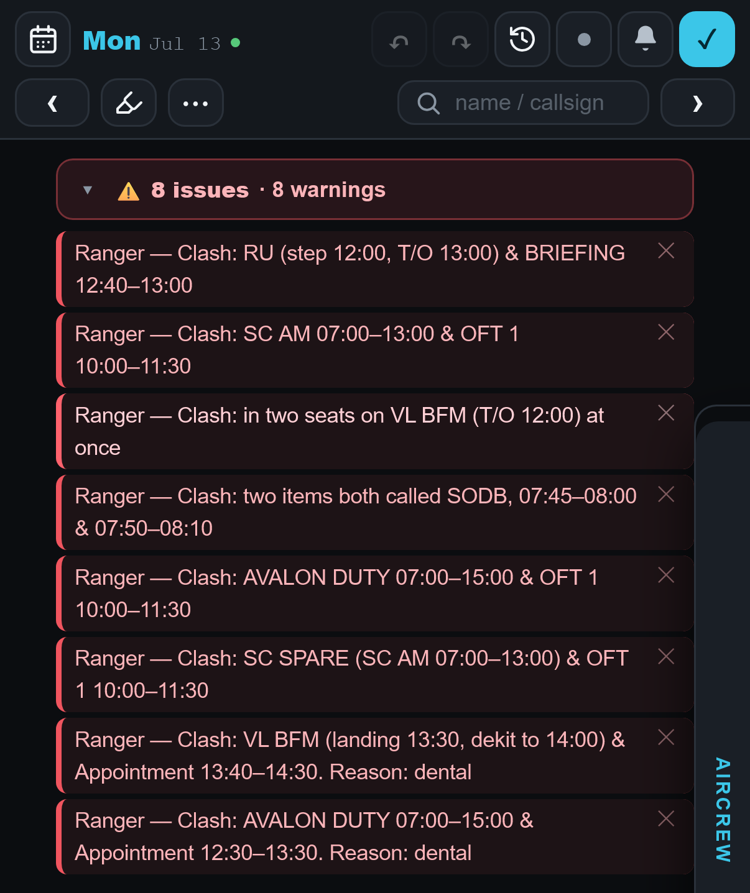
Today Ranger — RU & BRIEFING clash
Proposed Ranger — Clash: RU (step 12:00, T/O 13:00) & BRIEFING 12:40–13:00
Today Ranger — SC AM & OFT 1 clash
Proposed Ranger — Clash: SC AM 07:00–13:00 & OFT 1 10:00–11:30
Today Ranger — Ranger is in two seats on VL BFM at once
Proposed Ranger — Clash: in two seats on VL BFM (T/O 12:00) at once
Today Ranger — Ranger is on two items called SODB at once
Proposed Ranger — Clash: two items both called SODB, 07:45–08:00 & 07:50–08:10
Today Ranger — Ranger is on AVALON DUTY (07:00–15:00) and also on OFT 1 (10:00–11:30)
Proposed Ranger — Clash: AVALON DUTY 07:00–15:00 & OFT 1 10:00–11:30
Today Ranger — Ranger is standing SC SPARE (SC AM 07:00–13:00) and also on OFT 1 (10:00–11:30)
Proposed Ranger — Clash: SC SPARE (SC AM 07:00–13:00) & OFT 1 10:00–11:30
Today Ranger — Appointment clashes with VL BFM — reason: dental
Proposed Ranger — Clash: VL BFM (landing 13:30, dekit to 14:00) & Appointment 13:40–14:30. Reason: dental
Today Ranger — Appointment but tasked — AVALON duty — reason: dental
Proposed Ranger — Clash: AVALON DUTY 07:00–15:00 & Appointment 12:30–13:30. Reason: dental
The label says what is wrong: the item overlaps a standby shift, or sits between his in-time and the shift's start.
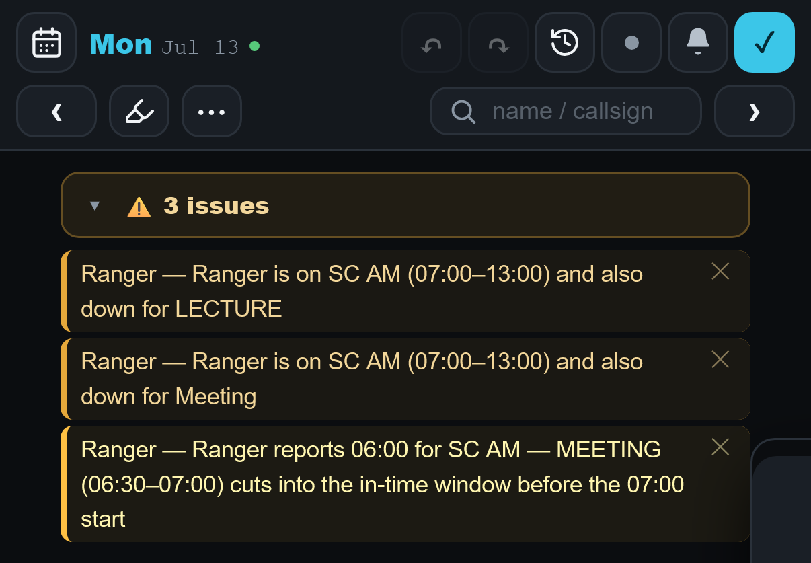
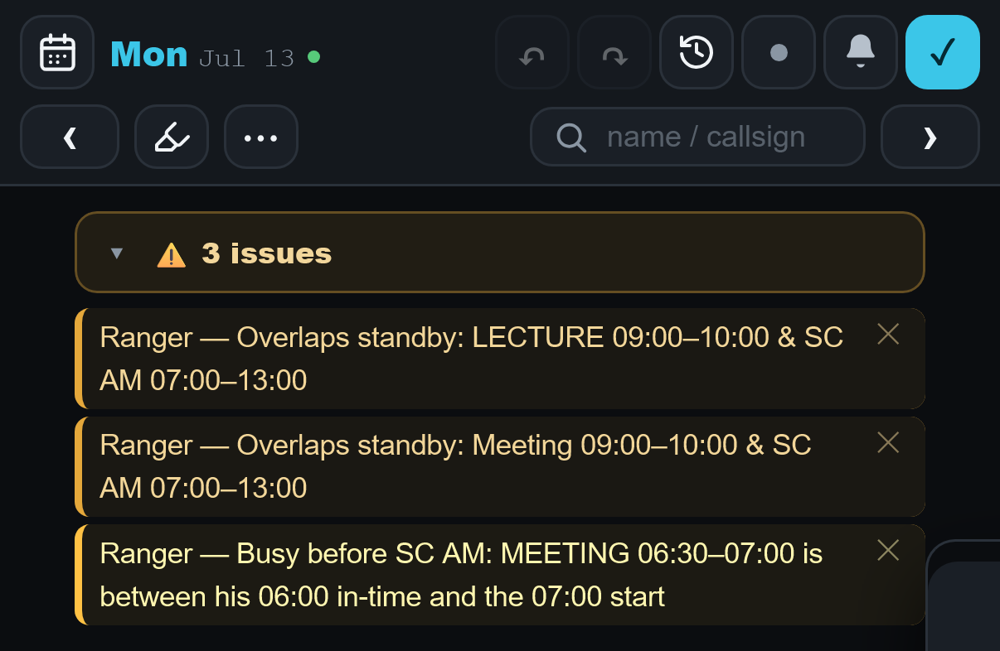
Today Ranger — Ranger is on SC AM (07:00–13:00) and also down for LECTURE
Proposed Ranger — Overlaps standby: LECTURE 09:00–10:00 & SC AM 07:00–13:00
Today Ranger — Ranger is on SC AM (07:00–13:00) and also down for Meeting
Proposed Ranger — Overlaps standby: Meeting 09:00–10:00 & SC AM 07:00–13:00
Today Ranger — Ranger reports 06:00 for SC AM — MEETING (06:30–07:00) cuts into the in-time window before the 07:00 start
Proposed Ranger — Busy before SC AM: MEETING 06:30–07:00 is between his 06:00 in-time and the 07:00 start
The labels are the names you gave these checks: "Downchit + planned", "On leave + planned". What he is planned on now carries its times.
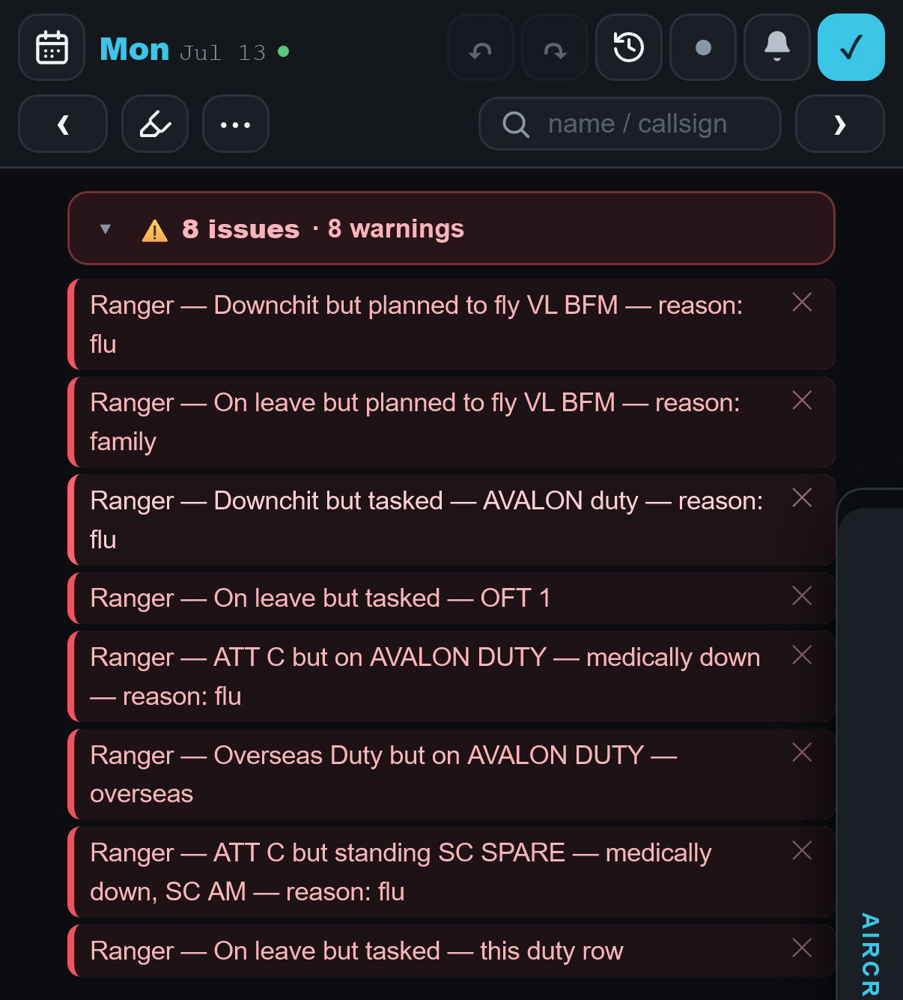
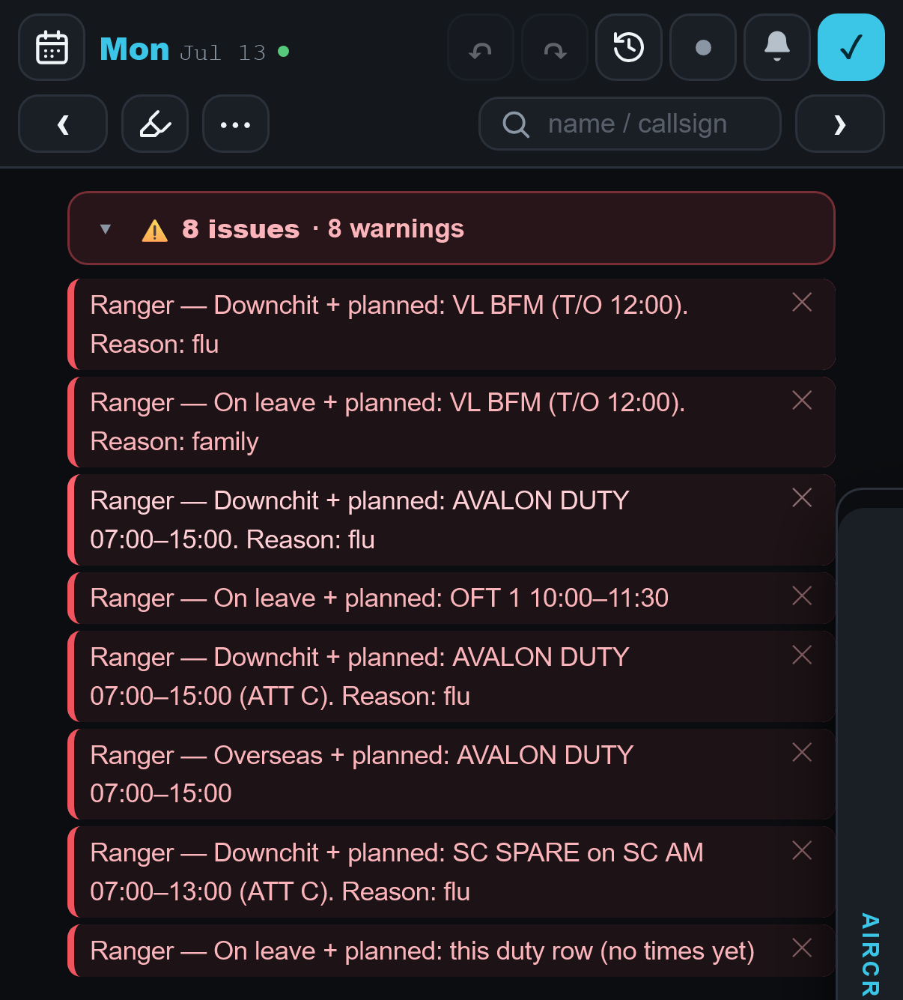
Today Ranger — Downchit but planned to fly VL BFM — reason: flu
Proposed Ranger — Downchit + planned: VL BFM (T/O 12:00). Reason: flu
Today Ranger — On leave but planned to fly VL BFM — reason: family
Proposed Ranger — On leave + planned: VL BFM (T/O 12:00). Reason: family
Today Ranger — Downchit but tasked — AVALON duty — reason: flu
Proposed Ranger — Downchit + planned: AVALON DUTY 07:00–15:00. Reason: flu
Today Ranger — On leave but tasked — OFT 1
Proposed Ranger — On leave + planned: OFT 1 10:00–11:30
Today Ranger — ATT C but on AVALON DUTY — medically down — reason: flu
Proposed Ranger — Downchit + planned: AVALON DUTY 07:00–15:00 (ATT C). Reason: flu
Today Ranger — Overseas Duty but on AVALON DUTY — overseas
Proposed Ranger — Overseas + planned: AVALON DUTY 07:00–15:00
Today Ranger — ATT C but standing SC SPARE — medically down, SC AM — reason: flu
Proposed Ranger — Downchit + planned: SC SPARE on SC AM 07:00–13:00 (ATT C). Reason: flu
Today Ranger — On leave but tasked — this duty row
Proposed Ranger — On leave + planned: this duty row (no times yet)
"Misses", whose brief or debrief, its window, then what is in the way. New: each thing in the way carries its own times (today only its name).
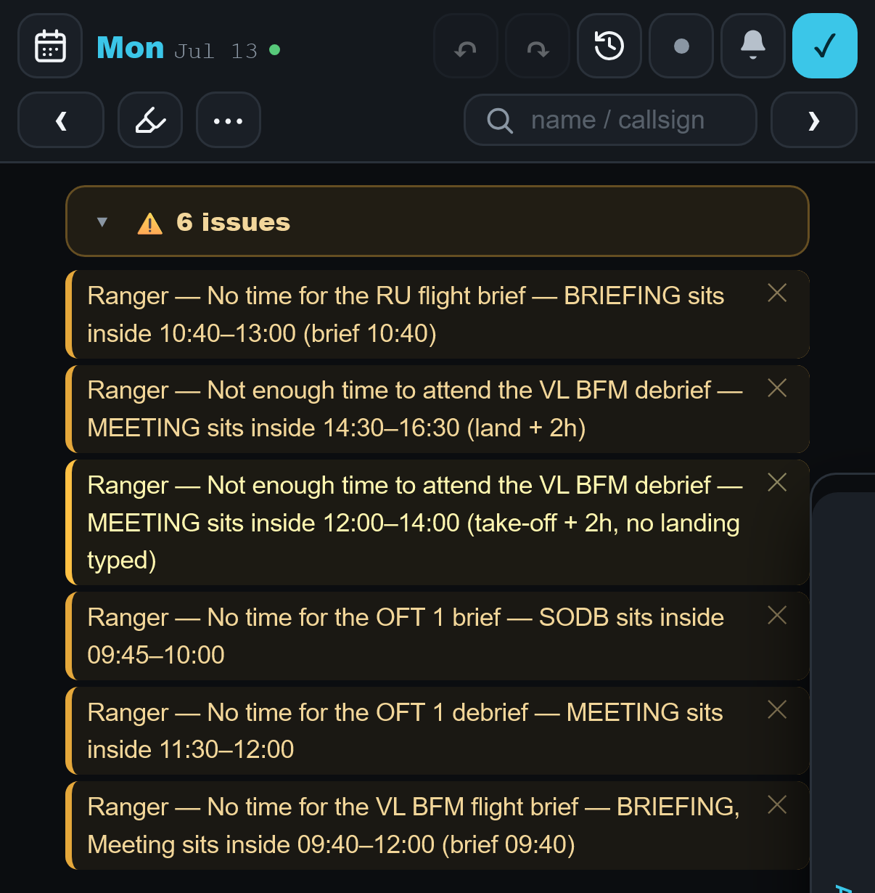
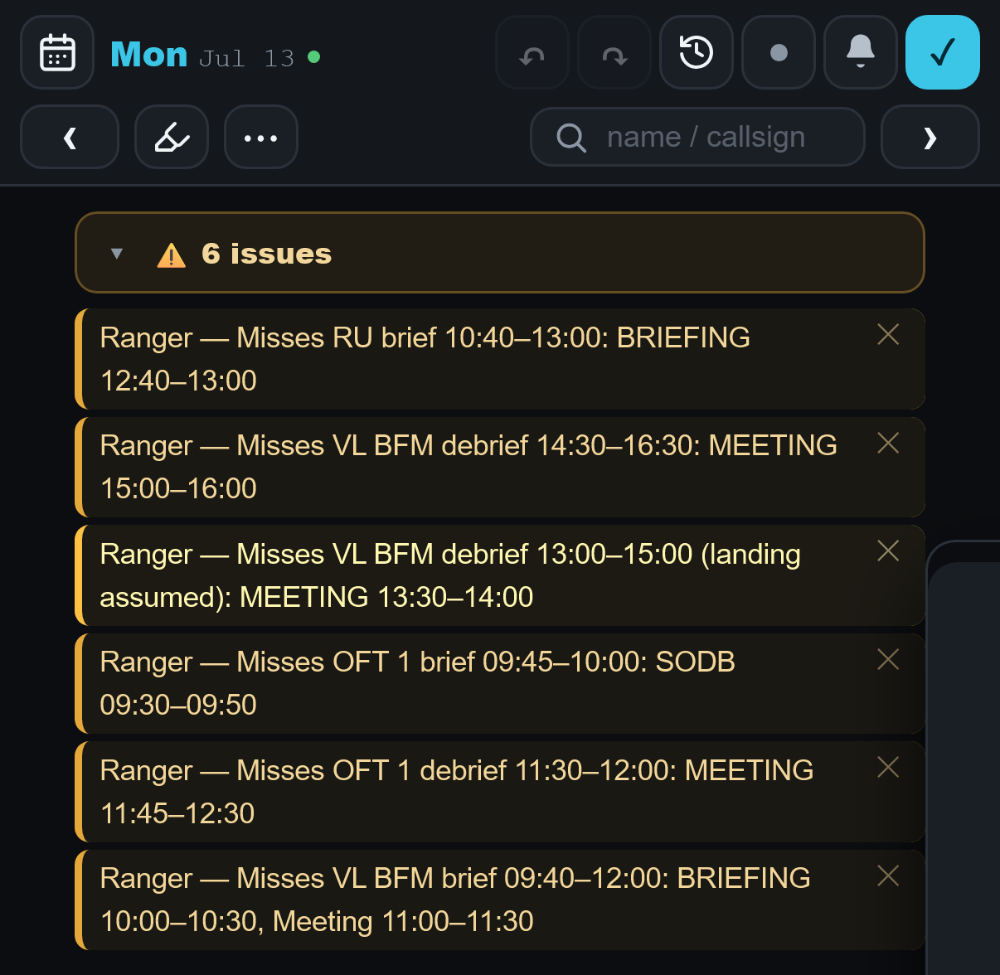
Today Ranger — No time for the RU flight brief — BRIEFING sits inside 10:40–13:00 (brief 10:40)
Proposed Ranger — Misses RU brief 10:40–13:00: BRIEFING 12:40–13:00
Today Ranger — Not enough time to attend the VL BFM debrief — MEETING sits inside 14:30–16:30 (land + 2h)
Proposed Ranger — Misses VL BFM debrief 14:30–16:30: MEETING 15:00–16:00
Today Ranger — Not enough time to attend the VL BFM debrief — MEETING sits inside 12:00–14:00 (take-off + 2h, no landing typed)
Proposed Ranger — Misses VL BFM debrief 13:00–15:00 (landing assumed): MEETING 13:30–14:00
Today Ranger — No time for the OFT 1 brief — SODB sits inside 09:45–10:00
Proposed Ranger — Misses OFT 1 brief 09:45–10:00: SODB 09:30–09:50
Today Ranger — No time for the OFT 1 debrief — MEETING sits inside 11:30–12:00
Proposed Ranger — Misses OFT 1 debrief 11:30–12:00: MEETING 11:45–12:30
Today Ranger — No time for the VL BFM flight brief — BRIEFING, Meeting sits inside 09:40–12:00 (brief 09:40)
Proposed Ranger — Misses VL BFM brief 09:40–12:00: BRIEFING 10:00–10:30, Meeting 11:00–11:30
The crew-rest line keeps your order (question 4). "Tight turning" becomes "Tight crew rest" (question 2). In the first picture's fourth row the figures differ on purpose: today a flight with no landing is counted as landing at its take-off; after, its landing is assumed one hour later, so the rest is an hour shorter. That is the change built after you approve the words.
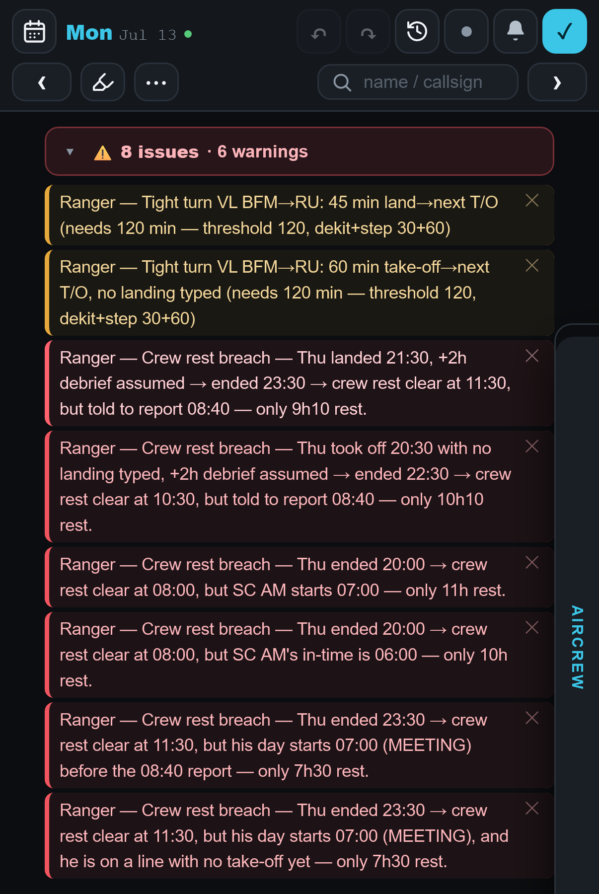
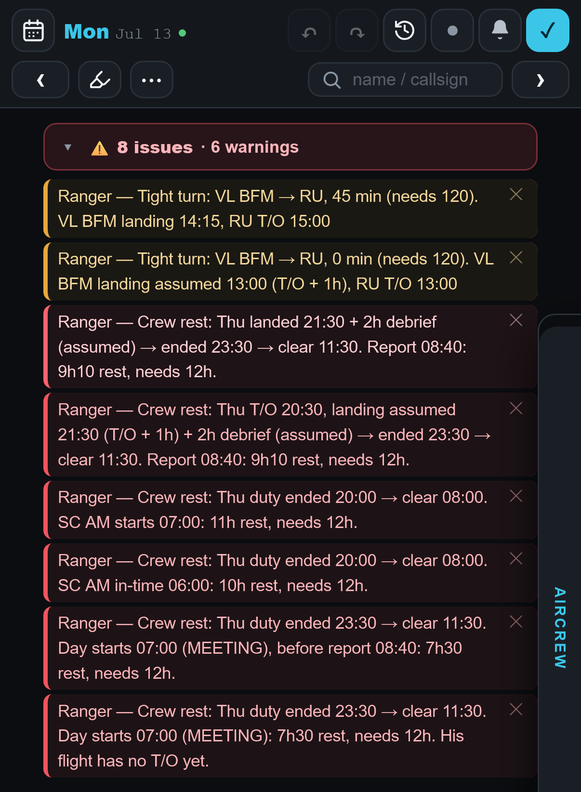
Today Ranger — Tight turn VL BFM→RU: 45 min land→next T/O (needs 120 min — threshold 120, dekit+step 30+60)
Proposed Ranger — Tight turn: VL BFM → RU, 45 min (needs 120). VL BFM landing 14:15, RU T/O 15:00
Today Ranger — Tight turn VL BFM→RU: 60 min take-off→next T/O, no landing typed (needs 120 min — threshold 120, dekit+step 30+60)
Proposed Ranger — Tight turn: VL BFM → RU, 0 min (needs 120). VL BFM landing assumed 13:00 (T/O + 1h), RU T/O 13:00
Today Ranger — Crew rest breach — Thu landed 21:30, +2h debrief assumed → ended 23:30 → crew rest clear at 11:30, but told to report 08:40 — only 9h10 rest.
Proposed Ranger — Crew rest: Thu landed 21:30 + 2h debrief (assumed) → ended 23:30 → clear 11:30. Report 08:40: 9h10 rest, needs 12h.
Today Ranger — Crew rest breach — Thu took off 20:30 with no landing typed, +2h debrief assumed → ended 22:30 → crew rest clear at 10:30, but told to report 08:40 — only 10h10 rest.
Proposed Ranger — Crew rest: Thu T/O 20:30, landing assumed 21:30 (T/O + 1h) + 2h debrief (assumed) → ended 23:30 → clear 11:30. Report 08:40: 9h10 rest, needs 12h.
Today Ranger — Crew rest breach — Thu ended 20:00 → crew rest clear at 08:00, but SC AM starts 07:00 — only 11h rest.
Proposed Ranger — Crew rest: Thu duty ended 20:00 → clear 08:00. SC AM starts 07:00: 11h rest, needs 12h.
Today Ranger — Crew rest breach — Thu ended 20:00 → crew rest clear at 08:00, but SC AM's in-time is 06:00 — only 10h rest.
Proposed Ranger — Crew rest: Thu duty ended 20:00 → clear 08:00. SC AM in-time 06:00: 10h rest, needs 12h.
Today Ranger — Crew rest breach — Thu ended 23:30 → crew rest clear at 11:30, but his day starts 07:00 (MEETING) before the 08:40 report — only 7h30 rest.
Proposed Ranger — Crew rest: Thu duty ended 23:30 → clear 11:30. Day starts 07:00 (MEETING), before report 08:40: 7h30 rest, needs 12h.
Today Ranger — Crew rest breach — Thu ended 23:30 → crew rest clear at 11:30, but his day starts 07:00 (MEETING), and he is on a line with no take-off yet — only 7h30 rest.
Proposed Ranger — Crew rest: Thu duty ended 23:30 → clear 11:30. Day starts 07:00 (MEETING): 7h30 rest, needs 12h. His flight has no T/O yet.
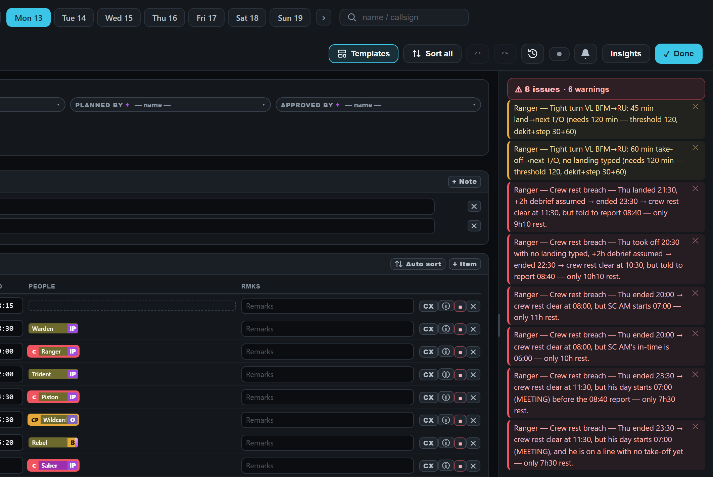
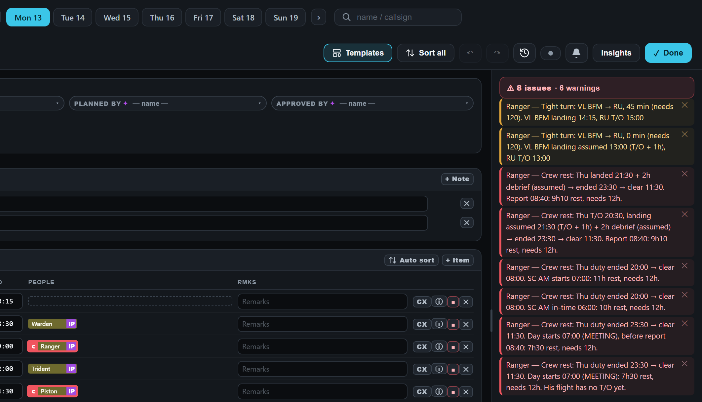
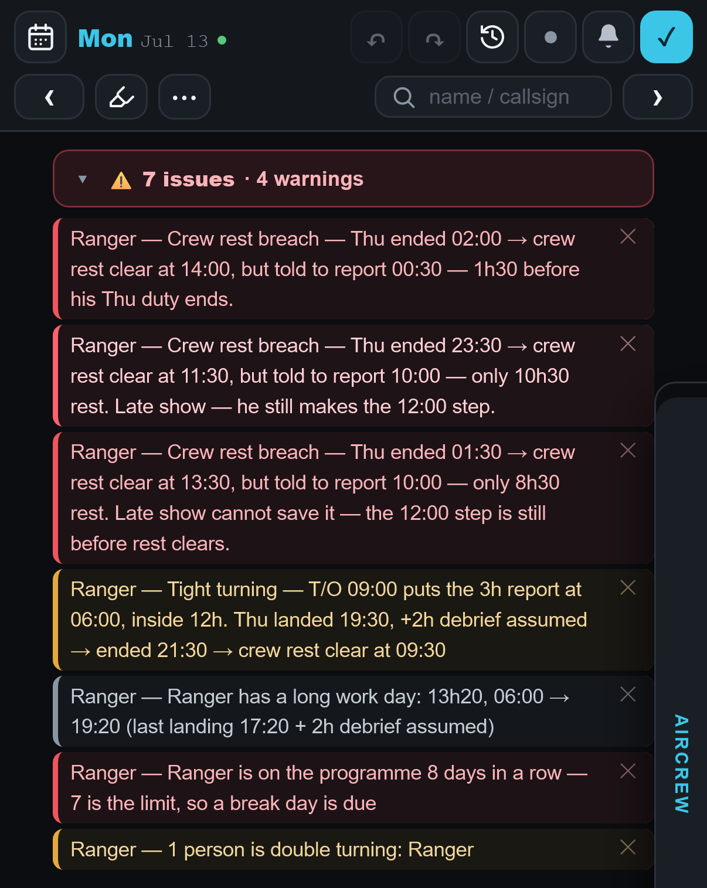
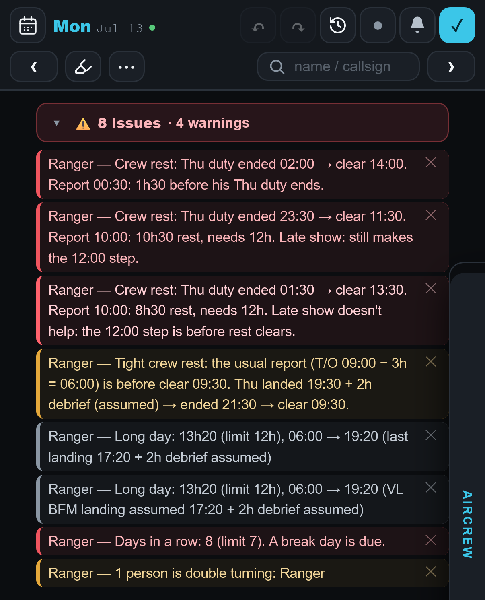
Today Ranger — Crew rest breach — Thu ended 02:00 → crew rest clear at 14:00, but told to report 00:30 — 1h30 before his Thu duty ends.
Proposed Ranger — Crew rest: Thu duty ended 02:00 → clear 14:00. Report 00:30: 1h30 before his Thu duty ends.
Today Ranger — Crew rest breach — Thu ended 23:30 → crew rest clear at 11:30, but told to report 10:00 — only 10h30 rest. Late show — he still makes the 12:00 step.
Proposed Ranger — Crew rest: Thu duty ended 23:30 → clear 11:30. Report 10:00: 10h30 rest, needs 12h. Late show: still makes the 12:00 step.
Today Ranger — Crew rest breach — Thu ended 01:30 → crew rest clear at 13:30, but told to report 10:00 — only 8h30 rest. Late show cannot save it — the 12:00 step is still before rest clears.
Proposed Ranger — Crew rest: Thu duty ended 01:30 → clear 13:30. Report 10:00: 8h30 rest, needs 12h. Late show doesn't help: the 12:00 step is before rest clears.
Today Ranger — Tight turning — T/O 09:00 puts the 3h report at 06:00, inside 12h. Thu landed 19:30, +2h debrief assumed → ended 21:30 → crew rest clear at 09:30
Proposed Ranger — Tight crew rest: the usual report (T/O 09:00 − 3h = 06:00) is before clear 09:30. Thu landed 19:30 + 2h debrief (assumed) → ended 21:30 → clear 09:30.
Today Ranger — Ranger has a long work day: 13h20, 06:00 → 19:20 (last landing 17:20 + 2h debrief assumed)
Proposed Ranger — Long day: 13h20 (limit 12h), 06:00 → 19:20 (last landing 17:20 + 2h debrief assumed)
Today no such line today
Proposed Ranger — Long day: 13h20 (limit 12h), 06:00 → 19:20 (VL BFM landing assumed 17:20 + 2h debrief assumed)
Today Ranger — Ranger is on the programme 8 days in a row — 7 is the limit, so a break day is due
Proposed Ranger — Days in a row: 8 (limit 7). A break day is due.
Unchanged Ranger — 1 person is double turning: Ranger
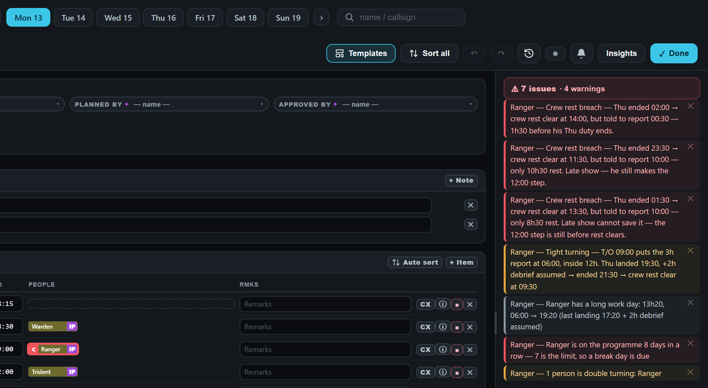
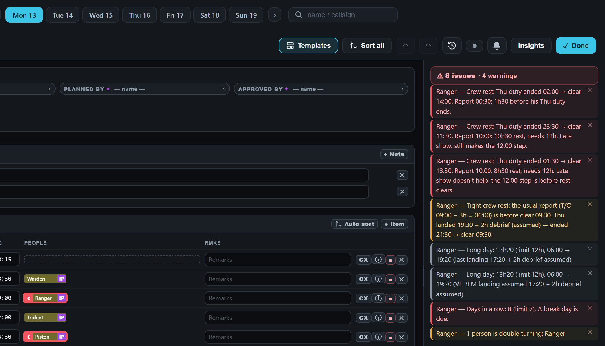
The seat is called "front seat" everywhere. One short reason is added where the line gave none: "An OCU needs an instructor in the other seat."
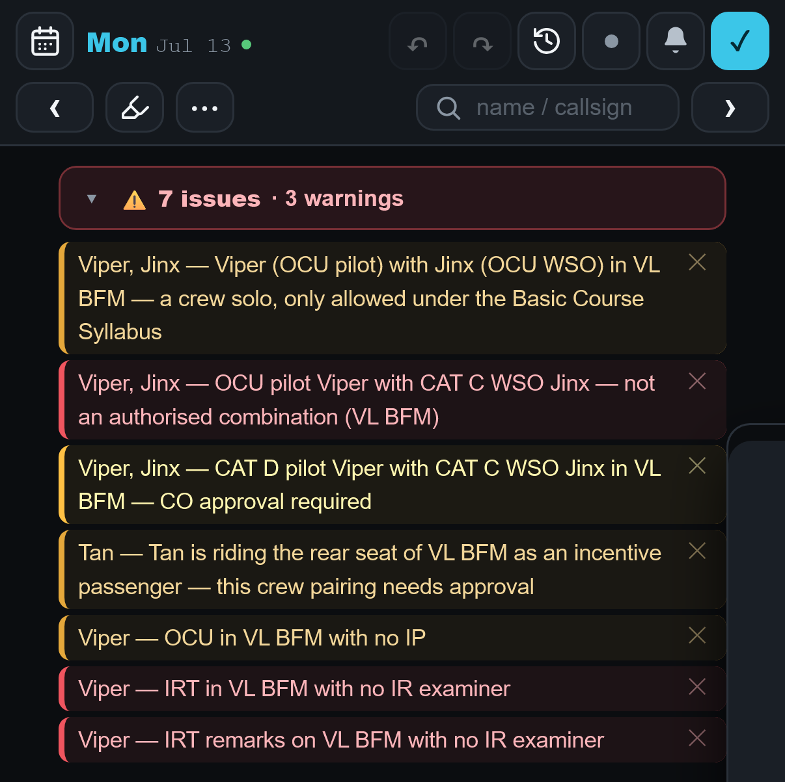
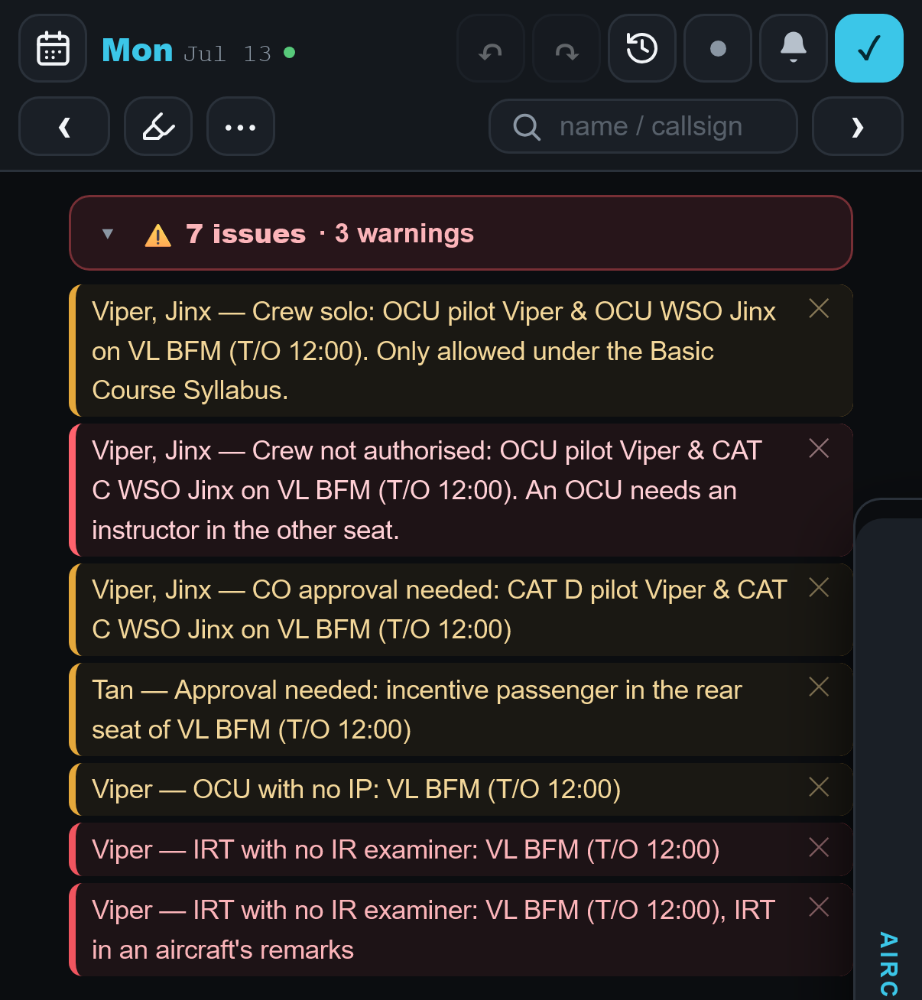
Today Viper, Jinx — Viper (OCU pilot) with Jinx (OCU WSO) in VL BFM — a crew solo, only allowed under the Basic Course Syllabus
Proposed Viper, Jinx — Crew solo: OCU pilot Viper & OCU WSO Jinx on VL BFM (T/O 12:00). Only allowed under the Basic Course Syllabus.
Today Viper, Jinx — OCU pilot Viper with CAT C WSO Jinx — not an authorised combination (VL BFM)
Proposed Viper, Jinx — Crew not authorised: OCU pilot Viper & CAT C WSO Jinx on VL BFM (T/O 12:00). An OCU needs an instructor in the other seat.
Today Viper, Jinx — CAT D pilot Viper with CAT C WSO Jinx in VL BFM — CO approval required
Proposed Viper, Jinx — CO approval needed: CAT D pilot Viper & CAT C WSO Jinx on VL BFM (T/O 12:00)
Today Tan — Tan is riding the rear seat of VL BFM as an incentive passenger — this crew pairing needs approval
Proposed Tan — Approval needed: incentive passenger in the rear seat of VL BFM (T/O 12:00)
Today Viper — OCU in VL BFM with no IP
Proposed Viper — OCU with no IP: VL BFM (T/O 12:00)
Today Viper — IRT in VL BFM with no IR examiner
Proposed Viper — IRT with no IR examiner: VL BFM (T/O 12:00)
Today Viper — IRT remarks on VL BFM with no IR examiner
Proposed Viper — IRT with no IR examiner: VL BFM (T/O 12:00), IRT in an aircraft's remarks
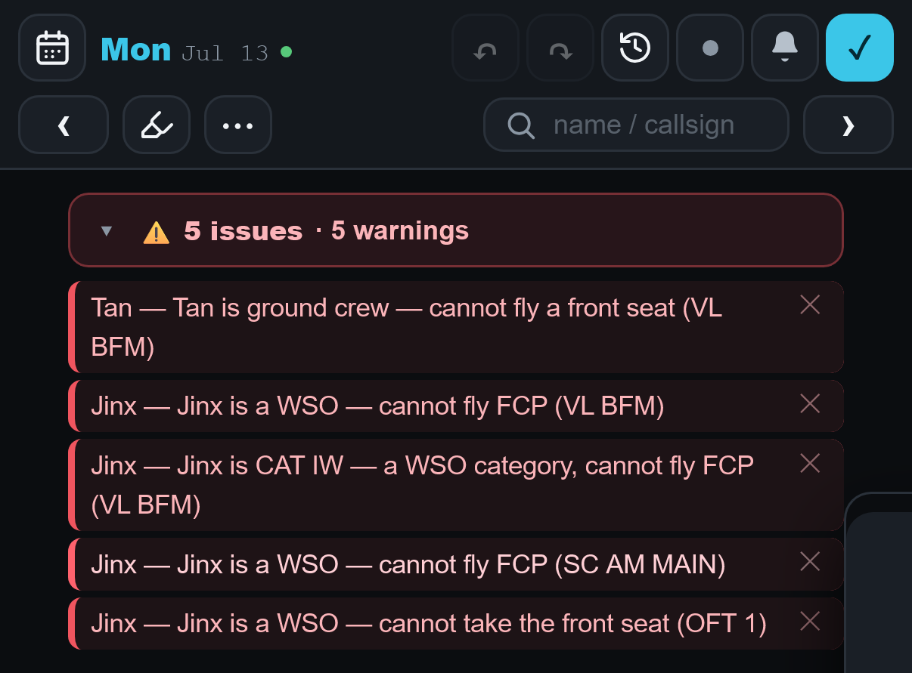
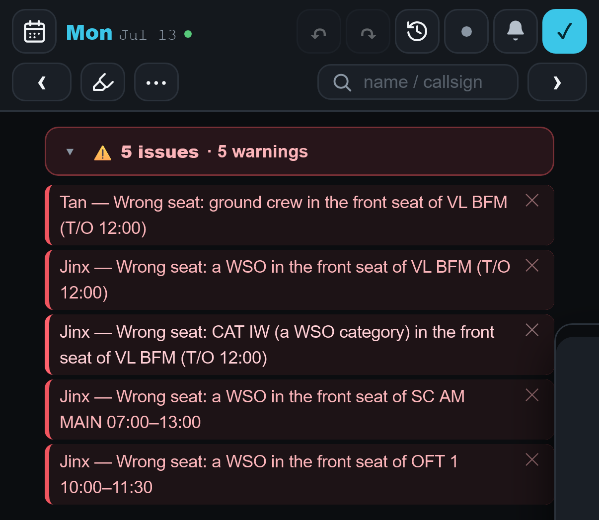
Today Tan — Tan is ground crew — cannot fly a front seat (VL BFM)
Proposed Tan — Wrong seat: ground crew in the front seat of VL BFM (T/O 12:00)
Today Jinx — Jinx is a WSO — cannot fly FCP (VL BFM)
Proposed Jinx — Wrong seat: a WSO in the front seat of VL BFM (T/O 12:00)
Today Jinx — Jinx is CAT IW — a WSO category, cannot fly FCP (VL BFM)
Proposed Jinx — Wrong seat: CAT IW (a WSO category) in the front seat of VL BFM (T/O 12:00)
Today Jinx — Jinx is a WSO — cannot fly FCP (SC AM MAIN)
Proposed Jinx — Wrong seat: a WSO in the front seat of SC AM MAIN 07:00–13:00
Today Jinx — Jinx is a WSO — cannot take the front seat (OFT 1)
Proposed Jinx — Wrong seat: a WSO in the front seat of OFT 1 10:00–11:30
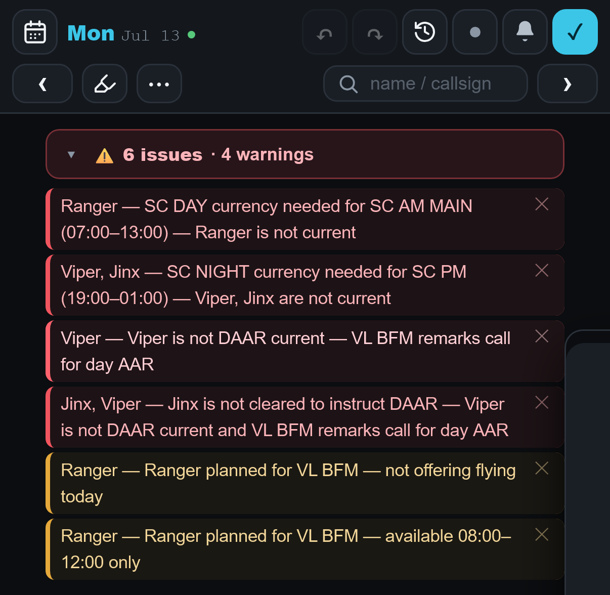
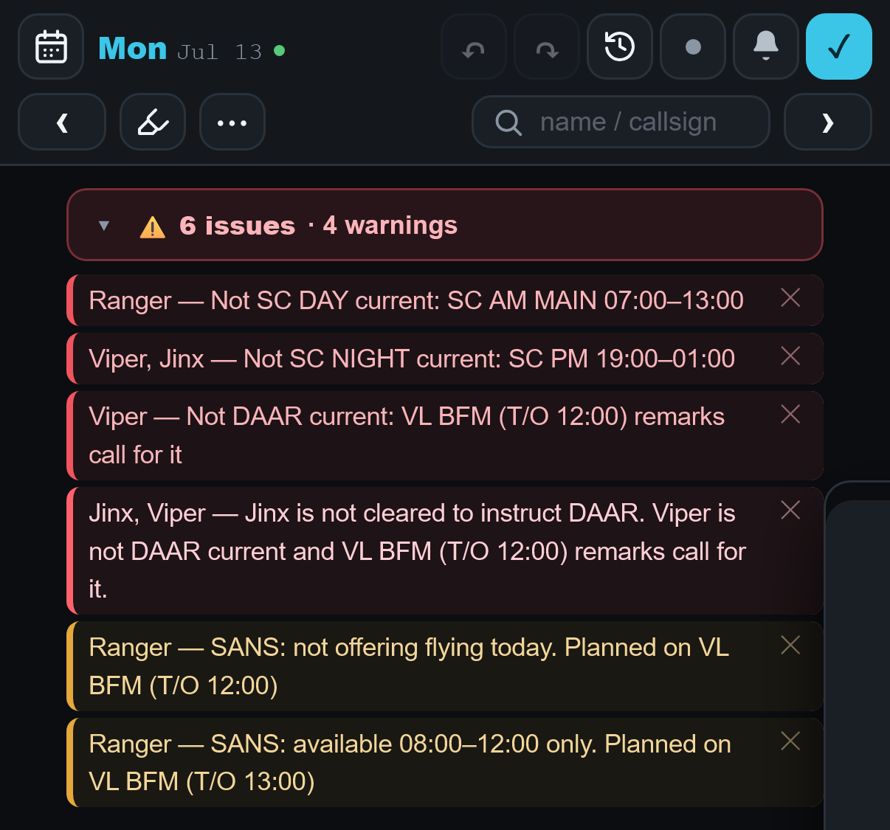
Today Ranger — SC DAY currency needed for SC AM MAIN (07:00–13:00) — Ranger is not current
Proposed Ranger — Not SC DAY current: SC AM MAIN 07:00–13:00
Today Viper, Jinx — SC NIGHT currency needed for SC PM (19:00–01:00) — Viper, Jinx are not current
Proposed Viper, Jinx — Not SC NIGHT current: SC PM 19:00–01:00
Today Viper — Viper is not DAAR current — VL BFM remarks call for day AAR
Proposed Viper — Not DAAR current: VL BFM (T/O 12:00) remarks call for it
Today Jinx, Viper — Jinx is not cleared to instruct DAAR — Viper is not DAAR current and VL BFM remarks call for day AAR
Proposed Jinx, Viper — Jinx is not cleared to instruct DAAR. Viper is not DAAR current and VL BFM (T/O 12:00) remarks call for it.
Today Ranger — Ranger planned for VL BFM — not offering flying today
Proposed Ranger — SANS: not offering flying today. Planned on VL BFM (T/O 12:00)
Today Ranger — Ranger planned for VL BFM — available 08:00–12:00 only
Proposed Ranger — SANS: available 08:00–12:00 only. Planned on VL BFM (T/O 13:00)
These already read on their own, so most are left whole. Only the dash that joined two thoughts goes, and "one of the two is wrong" is cut because "Times look wrong" already says it.
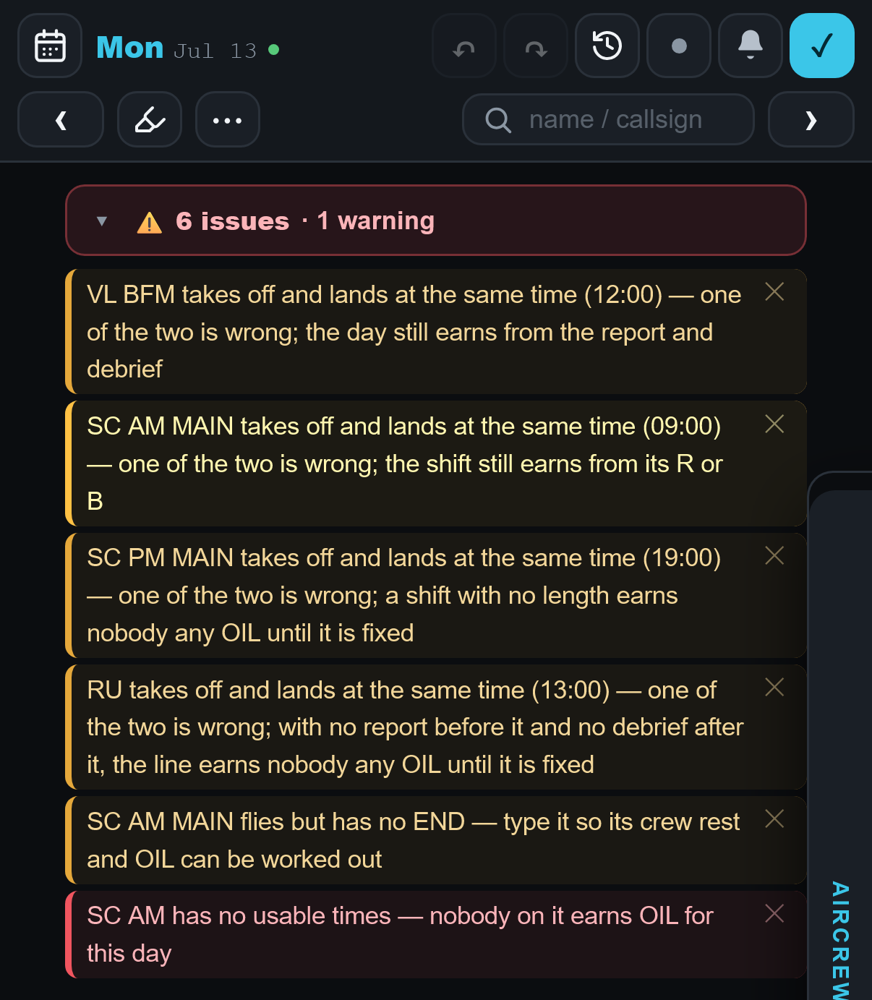
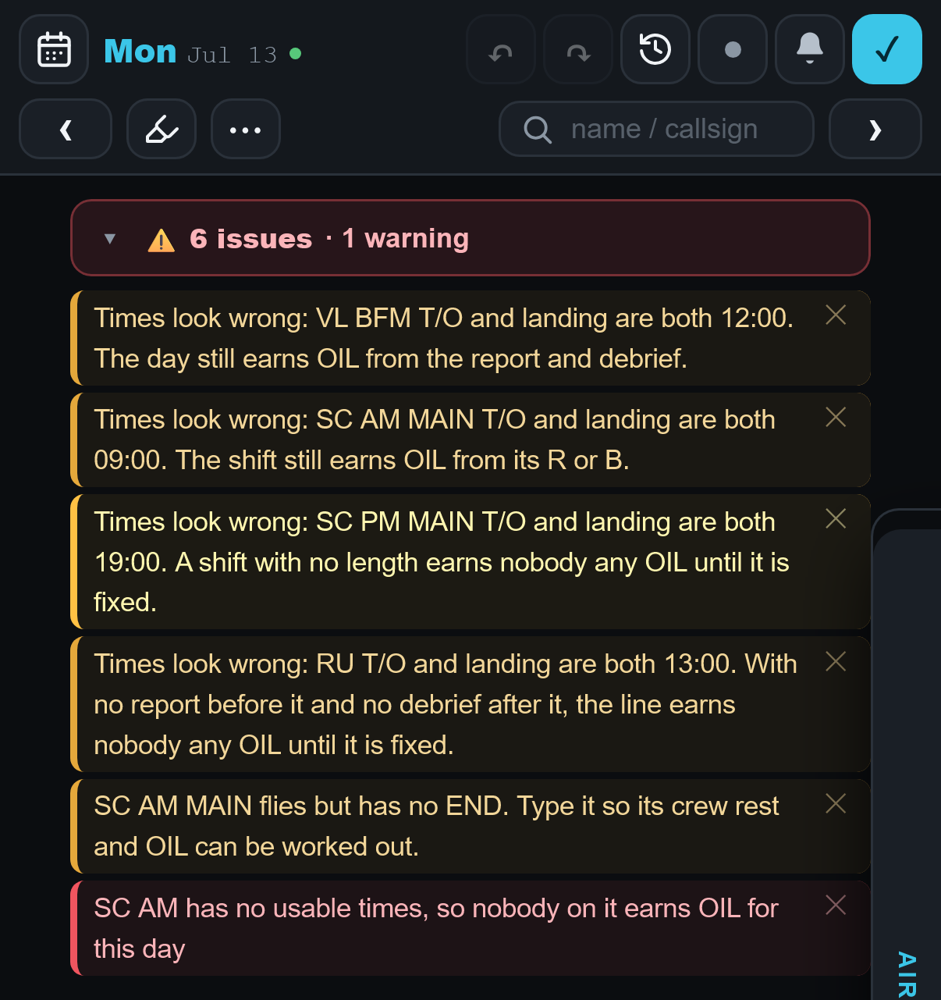
Today VL BFM takes off and lands at the same time (12:00) — one of the two is wrong; the day still earns from the report and debrief
Proposed Times look wrong: VL BFM T/O and landing are both 12:00. The day still earns OIL from the report and debrief.
Today SC AM MAIN takes off and lands at the same time (09:00) — one of the two is wrong; the shift still earns from its R or B
Proposed Times look wrong: SC AM MAIN T/O and landing are both 09:00. The shift still earns OIL from its R or B.
Today SC PM MAIN takes off and lands at the same time (19:00) — one of the two is wrong; a shift with no length earns nobody any OIL until it is fixed
Proposed Times look wrong: SC PM MAIN T/O and landing are both 19:00. A shift with no length earns nobody any OIL until it is fixed.
Today RU takes off and lands at the same time (13:00) — one of the two is wrong; with no report before it and no debrief after it, the line earns nobody any OIL until it is fixed
Proposed Times look wrong: RU T/O and landing are both 13:00. With no report before it and no debrief after it, the line earns nobody any OIL until it is fixed.
Today SC AM MAIN flies but has no END — type it so its crew rest and OIL can be worked out
Proposed SC AM MAIN flies but has no END. Type it so its crew rest and OIL can be worked out.
Today SC AM has no usable times — nobody on it earns OIL for this day
Proposed SC AM has no usable times, so nobody on it earns OIL for this day
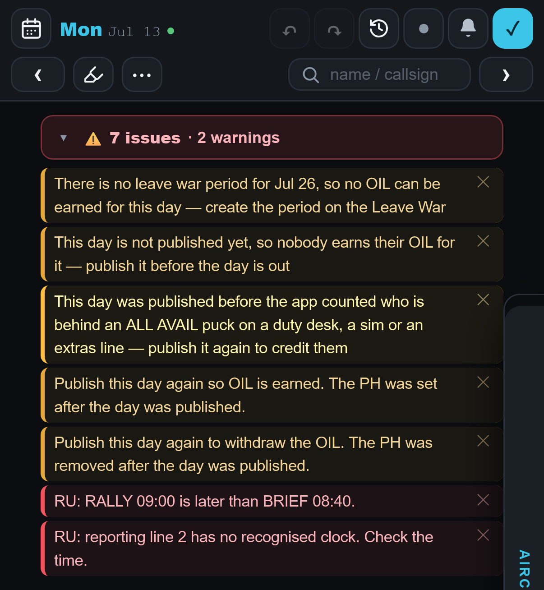
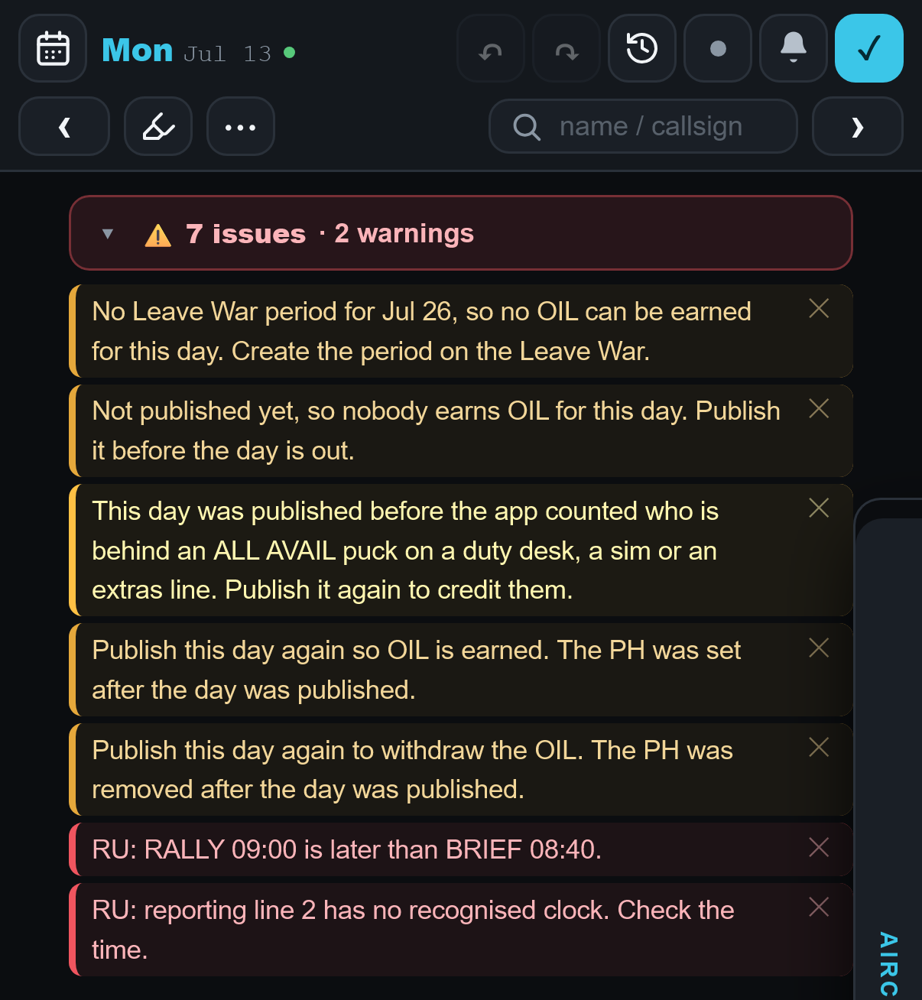
Today There is no leave war period for Jul 26, so no OIL can be earned for this day — create the period on the Leave War
Proposed No Leave War period for Jul 26, so no OIL can be earned for this day. Create the period on the Leave War.
Today This day is not published yet, so nobody earns their OIL for it — publish it before the day is out
Proposed Not published yet, so nobody earns OIL for this day. Publish it before the day is out.
Today This day was published before the app counted who is behind an ALL AVAIL puck on a duty desk, a sim or an extras line — publish it again to credit them
Proposed This day was published before the app counted who is behind an ALL AVAIL puck on a duty desk, a sim or an extras line. Publish it again to credit them.
Unchanged Publish this day again so OIL is earned. The PH was set after the day was published.
Unchanged Publish this day again to withdraw the OIL. The PH was removed after the day was published.
Unchanged RU: RALLY 09:00 is later than BRIEF 08:40.
Unchanged RU: reporting line 2 has no recognised clock. Check the time.
Where the app counts warnings by kind, each kind has a short name. If you say yes, these follow the new labels.
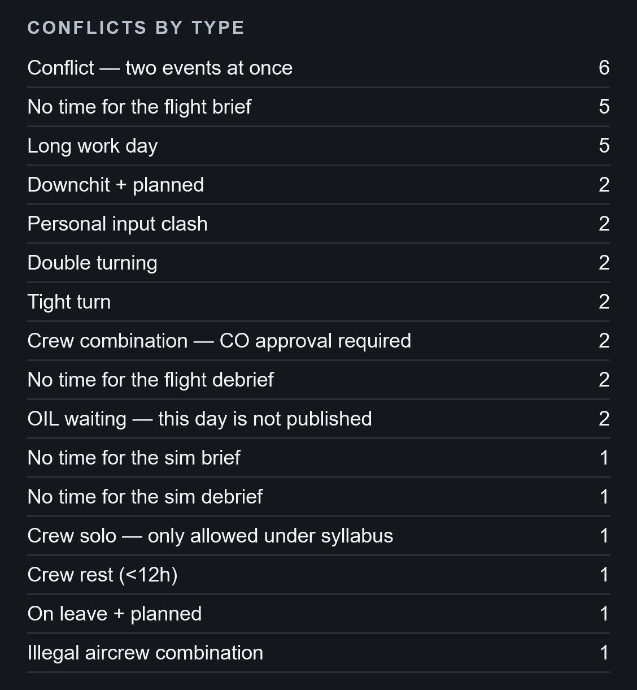
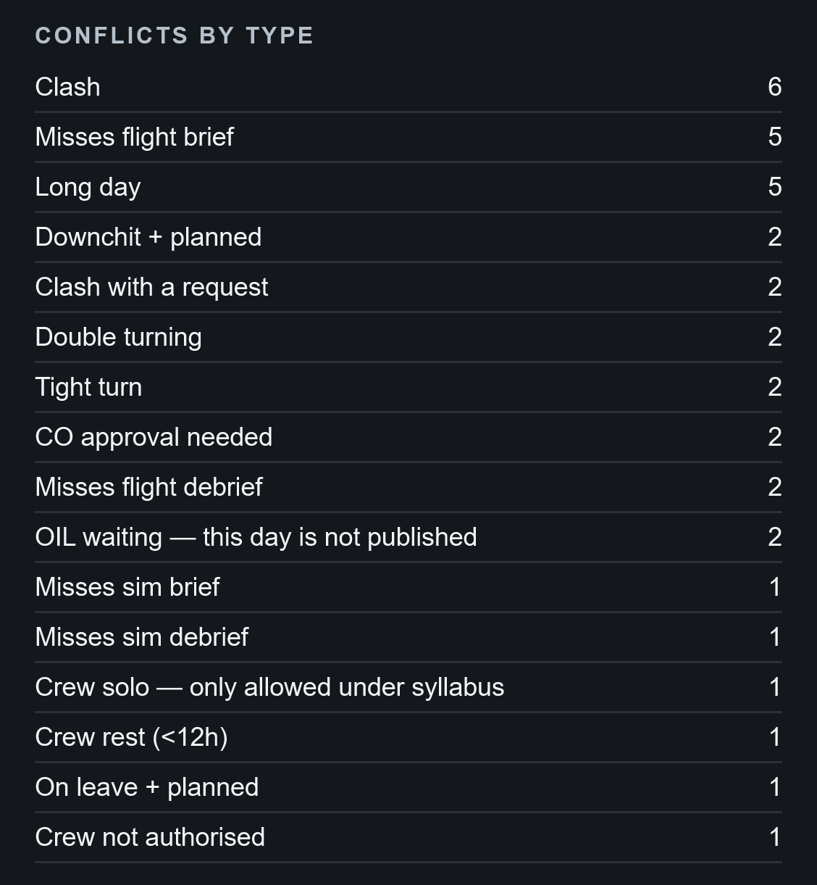
| Today's name | Proposed name |
|---|---|
| Conflict — two events at once | Clash |
| Personal input clash | Clash with a request |
| No time for the flight brief | Misses flight brief |
| No time for the flight debrief | Misses flight debrief |
| No time for the sim brief | Misses sim brief |
| No time for the sim debrief | Misses sim debrief |
| Tight turning — crew rest | Tight crew rest |
| Long work day | Long day |
| No break day — too many days in a row | Days in a row |
| Qualification — illegal seat | Wrong seat |
| Illegal aircrew combination | Crew not authorised |
| Crew combination — CO approval required | CO approval needed |
| OCU without IP | OCU with no IP |
| IRT without an IR examiner | IRT with no IR examiner |
| On shift — also down for a ground event | Overlaps standby |
| In-time window cut — busy between report and shift start | Busy before a standby shift |
Names not listed stay as they are: "Downchit + planned", "On leave + planned", "Tight turn", "Double turning" and the rest.
Same meaning, plainer order: first that a published day does not change until you publish it again, then when it shows as pending.
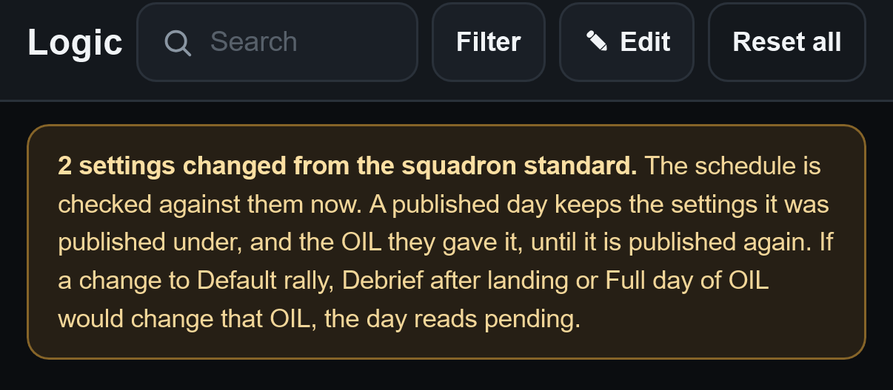
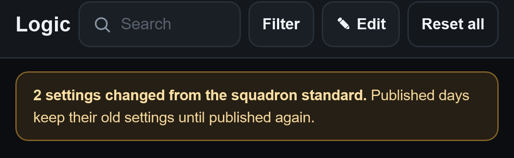
Today 2 settings changed from the squadron standard. The schedule is checked against them now. A published day keeps the settings it was published under, and the OIL they gave it, until it is published again. If a change to Default rally, Debrief after landing or Full day of OIL would change that OIL, the day reads pending.
Proposed 2 settings changed from the squadron standard. They are in use now. A published day does not change until you publish it again: it keeps its old settings and its OIL. If the new Default rally, Debrief after landing or Full day of OIL would change a published day's OIL, that day shows as pending.
The two sentences that follow it where they apply are left whole: "A changed late cut-off moves the LATE marks at once, on published days too." and "Only an admin can change them."
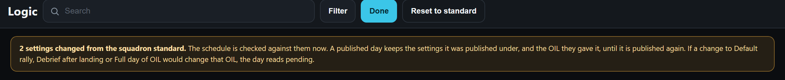
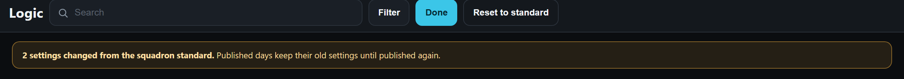
Your ruling of today: where a Logic change makes a published day pending through its OIL, the list says whether the OIL itself changed. Here Default rally went from 3h to 2h50 on a published Saturday. The list already shows the two worked times; the new line says the answer in words, inside the man's own row.
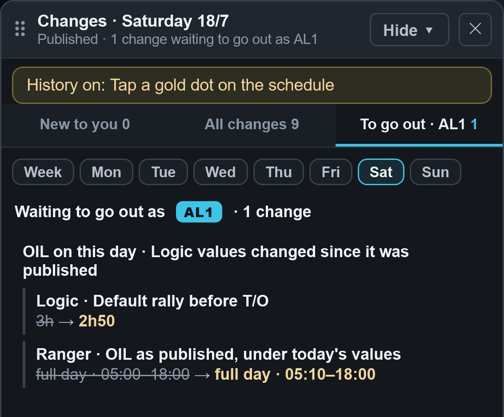
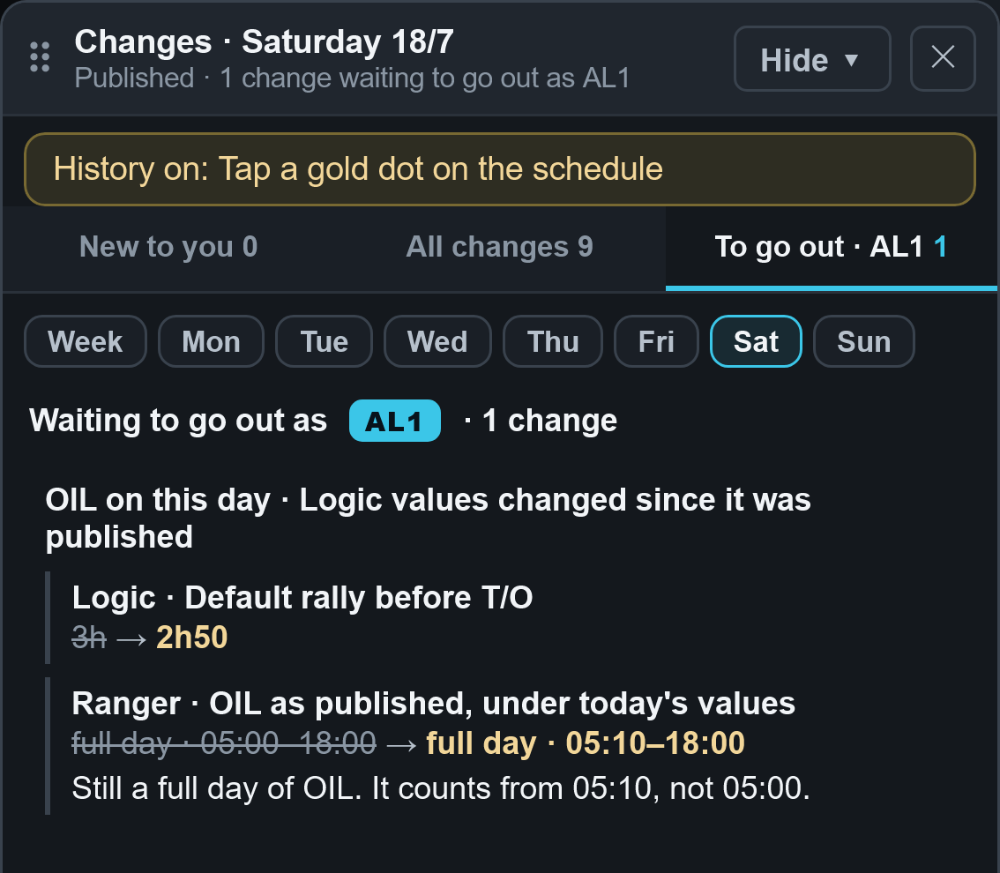
Today Ranger · OIL as published, under today's values: full day · 05:00–18:00 → full day · 05:10–18:00
Proposed the same row, with one line added under it: Still a full day of OIL. It counts from 05:10, not 05:00.
Where the OIL does change OIL changes: full day → half day. It counts from 13:30, not 10:00. (Words only: not drawn, because the demo week has no such day.)
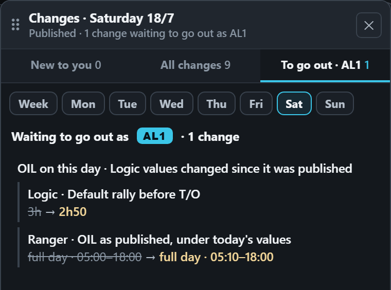
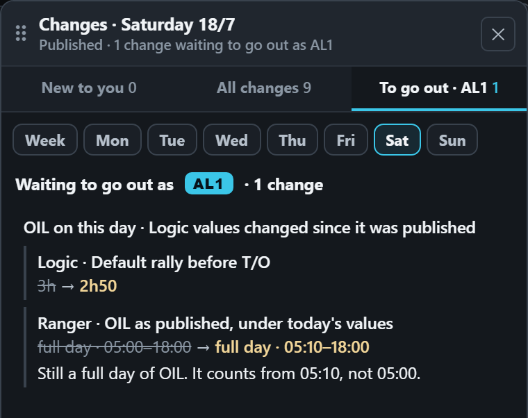
Tap anywhere to close